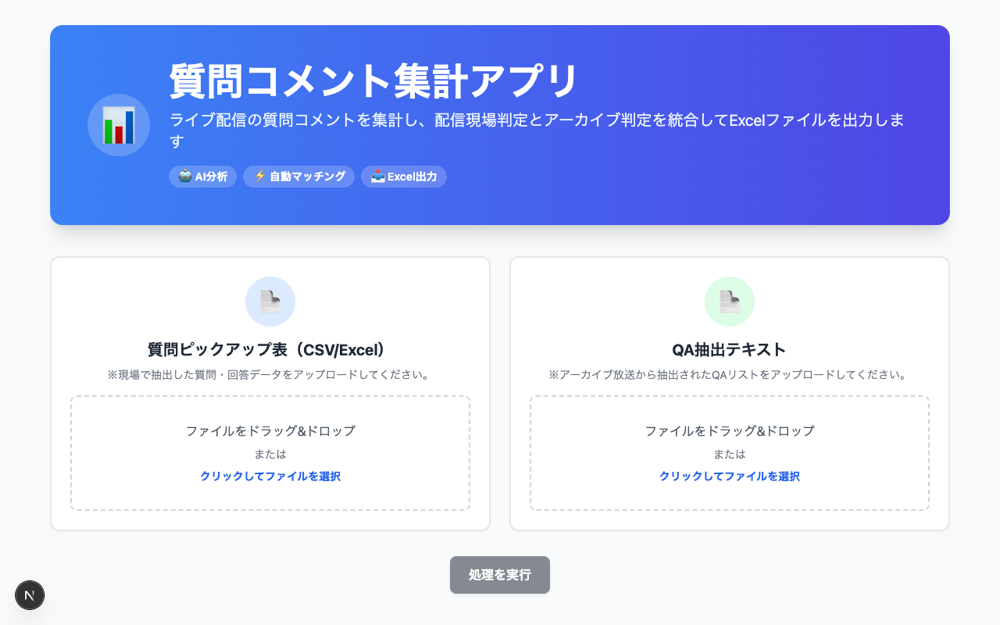
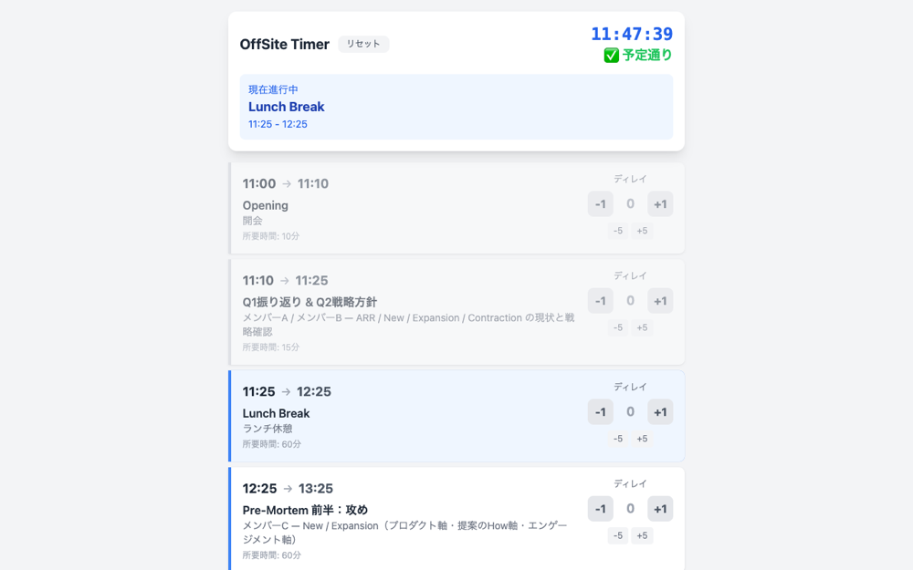
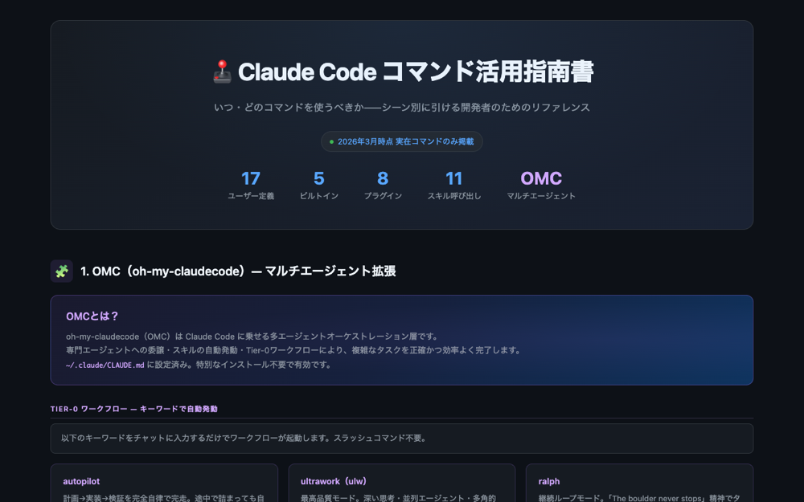

AIと働いた90日、
全記録。
日々の業務からクリエイティブ制作まで。2026年4月から90日、AIに仕事を任せながら働き方がどう変わったかの、誇張のない実測記録。
数字は、実測。
理想値ではなく、実際にかかっていた時間との比較。そして90日で積み上がった成果物の実数。
稼働時間は横ばい。
同時に回る仕事だけが、増えた。
時間記録ツール17ヶ月分の実測。月の総稼働はほぼ変わらないまま、同時進行プロジェクト数が平均8.8件から10.2件へ。空いた手で、次の仕事を持てるようになった。
※ 2026年7月16日にワークスペースを実カウント。効率化をAI単独の効果とは断定しない。確実に言えるのは、処理キャパが広がった実測と、自動化ツールを自作してきた外部証跡。
頼む、から任せるへ。
90日の記録を読み返すと、働き方は5段階で変わっていた。曲線は月ごとの作業記録数。仕組みが増えるほど、1日に回るセッションが増えていく。
頼む
資料もスライドも、都度依頼して受け取る。AIは便利な外注先。
4月上旬覚えさせる
指摘をルール化し、見積もりGASやテンプレを再利用資産に変える。
4月下旬〜5月任せる
業務ごとに専用スキルを建て、ボードやダッシュボードの日次運用をAIが担う。
6月上旬〜中旬間違えられなくする
「ルールを読んで守る」をやめ、禁止操作をフックで物理的に実行不能にする。
6月下旬AIがAIを改善する
AIが自分のルール・スキル・環境を並列エージェントで監査し、圧縮し、常駐システムが人の代わりに回る。
7月実務から生まれた、5つの型。
一般論ではなく、実際の案件の中で繰り返し使われて型になったものだけを並べる。
外部会議が終わると、録音AIの議事録1本から5つの成果物が同時に走り出す。かつて午後の1時間を使っていた事後処理が、確認だけの15分になった。
所要 15分。人の作業は最終確認のみ。実例: 議事録1本から新規案件2件を同時立ち上げした日もある
見積もりスプレッドシートはスクリプトが生成する。だが人が手で直した数字をAIが読み戻し、マスター側を同期する。「生成して終わり」ではなく、台帳が育ち続ける3層設計。90日で業務GASは117本になった。
共通フレームワーク継承・117本のGASが同じ型で動く過去案件の索引から類似見積もりを自動参照
実話。深夜の作業で、AIが資料の更新時刻を推測で書いた。翌日にはルールになり、やがて保存のたびに走る自動チェックになった。同じ progression で、危険なコマンドや禁止表現は「実行そのものがブロックされる」仕組みまで進んでいる。
失敗
AIが更新時刻を推測で記載。実際の時刻とずれていた。
ルール
「時刻は必ず時計を見てから書く」。その夜のうちに明文化。
機械化
ルールは意思ではなくフックで守る。違反操作は実行自体が拒否される。
学習スキル 181ファイル・確定ルール 54本が同じ経路で生まれた同じ失敗は、もう起きない
営業パイプラインのダッシュボードは、公開リポジトリの上で動いている。データ本体を暗号化して埋め込み、閲覧は社内アカウント限定の認証で解く。SaaSを買わずに、AIと自前で建てた仕組み。
保護付き公開デッキ 19サイトが運用中更新は「復号 → 編集 → 再暗号化 → 漏洩ゼロ検査」の機械フロー
創作物は「1案を出して直す」を繰り返さない。軸の違う3案を並行で作らせて、人は選ぶだけ。試行回数が3倍になり、案同士の良いところを混ぜる発想も生まれる。
提案骨子・メール・デザインで常用このページ自体が3案比較からC案が選ばれた実物
寝ている間も、秘書は働く。
単発の依頼ではなく、常駐して回り続けるシステム群。自動化の深さは3段階に分かれている。
完全無人
HANDS-FREE- 返信秘書1分間隔でSlack/メールの未返信を検知し、本人の文体ルール1,000行超に沿った下書きをDMへ配達
- 稼働記録の自動同期毎週土曜9:00、カレンダーの予定を時間記録ツールへ無人複製
半自動
HUMAN FINAL TAP- 請求処理請求書PDFをAIが直読し、管理シート転記と申請フォーム投入まで。申請ボタンだけ人
- 経費精算レシートを放り込むと42種の内訳を自動判定してフォームへ一括投入
- 勤怠打刻月末に平日分を一括処理。土日祝は自動除外
AI支援
CO-PILOT- 朝のブリーフィング予定・未返信・持ち越しを1枚に集約して差し出す
- 月次振り返り本人とチームメンバーの稼働分析レポートを自動生成
- 会議の事前ブリーフ前回の宿題・直近のやり取り・想定問答を1枚に
下書き・転記・判定まではAI。送信・申請・確定は、必ず人がボタンを押す。
道具がなければ、AIと作る。
業務の隙間を埋めるアプリは、探すより作る方が早かった。すべてAIとの共作で、実際の現場で使われているもの。



このページも、
AIと作った。
構成も、文章も、デザインも、数字の実測も。ここまで読んだすべてが、本文に登場した相棒との共作。制作の過程まで、この90日の働き方そのものだった。